Häufig gestellte Fragen
Allgemeine Fragen
Anlegen einer Aufgabe
Ich möchte meine Änderung der Aufgabe verwerfen - Was mache ich dann? Wie gehe ich vor?
Ganz oben links gibt es ein Disketten-Symbol zum Speichern und links daneben ein „X“ zum Verwerfen (siehe Grafik) der letzten Änderungen. Einfach auf das „X“ klicken. Damit sind alle Änderungen seit dem letzten Speichern verworfen.
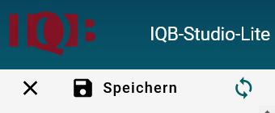
Sollte das „X“ und das „Speichern“ ausgegraut sein, dann wurde die Änderung bereits gespeichert.
Fehlermeldung
Beim Benennen einer Aufgabe bekomme ich eine Fehlermeldung, dass der Kurzname zu kurz ist, ungültige Zeichen enthält oder dass dieser Kurzname bereits existiert. Wie gehe ich vor?
In diesen Fällen muss der Kurzname geändert werden. Testen Sie mehrere Varianten aus bis die Fehlermeldung nicht mehr erscheint. Vorzugsweise sollen nur Buchstaben und Zahlen für die Kurznamen verwendet werden. Manchmal gibt es auch fachspezifische Richtlinien zur Benennung der Aufgaben.
Sollten Aufgaben doppelt erstellt werden, z.B. um verschiedene Umsetzungen auszutesten, empfiehlt sich ein Suffix wie „_neu“ „_2“ o.ä. zu verwenden.
Beim Kopieren eines Abschnitts (erweiterter Modus) bekomme ich die Fehlermeldung, dass doppelte IDs vergeben wurden – Was bedeutet das? Was kann ich dagegen machen?
Jedes Element in einer Aufgabe hat eine eindeutige ID, also eine Identifikationsnummer oder ein Identifikationsnamen. Die ID ist im Editor auf der rechten Seite ersichtlich, wenn Sie auf das entsprechende Element klicken:
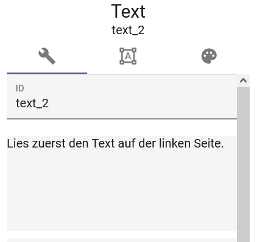
Hier ist z.B. die ID „text_2“. Das ist eine ID, die automatisch generiert wurde, als das Textelement erstellt wurde. Jedes Element hat solche Standard-ID, die automatisch erstellt wird. Wenn Sie einen Abschnitt aus Ihrer Aufgabe kopieren und in einem neuen Abschnitt Ihrer Aufgabe einfügen, erkennt der Editor, dass es doppelte IDs gibt und ändert sie automatisch, wenn der Abschnitt eingefügt wird. Sie können bei folgender Fehlermeldung auf „Bestätigen“ klicken:
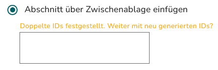
Für die Auswertung ist es wichtig, dass die Elemente, die von Schüler*innen bearbeitet werden, eindeutige und einzigartige IDs haben. Die ID-Vergabe folgt in der Regel einem bestimmten, vorher festgelegten Schema.
Eine Aufgabe lässt sich nicht mehr bearbeiten und zeigt eine Fehlermeldung, dass eine ID mehrfach vergeben wurde.
Dieser Fehler kann gelegentlich beim Kopieren von Abschnitten oder Elementen auftreten, insbesondere bei Verbundelementen wie Lückentexten. Dabei kann es vorkommen, dass doppelte IDs nicht automatisch erkannt und neu vergeben werden (s. den vorherigen Eintrag zu doppelten IDs). Falls Sie kurz zuvor gespeichert haben können Sie die Änderung noch verwerfen.
Mit ein wenig Aufwand lässt sich dieser Fehler aber beheben. Notieren Sie sich die ID, die den Fehler hervorruft und befolgen Sie diese Schritte:
Zunächst muss man die Aufgabe als Datei herunterladen. Wenn man im Arbeitsbereich mit der fehlerhaften Aufgabe ist klickt man unten links im Studio auf dieses Symbol:
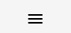
Ein Menü klappt auf und man wählt “Export”.
Daraufhin öffnet sich ein Fenster mit einer Liste der Aufgaben im Arbeitsbereich links und einigen weiteren Optionen rechts.
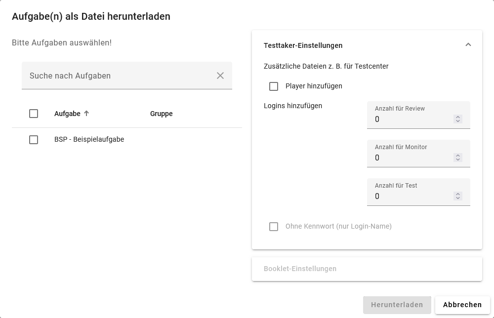
In der Liste wählt man die fehlerhafte Aufgabe aus, rechts muss man nichts machen. Danach klickt man auf “Herunterladen”.

Die Aufgabe wird als .zip Datei heruntergeladen. Nach dem Entpacken sieht man eine .voud und eine .xml Datei. Die .voud Datei muss man in einem Texteditor öffnen, mit Strg+F nach der fehlerhaften ID suchen und diese umbenennen. Am einfachsten ist es, eine beliebige Zahlenfolge, z.B. 123 an die ID anzuhängen.
Anschließend speichert man die .voud Datei, dabei sollte sich die Dateiendung nicht ändern, und fasst sie mit der .xml Datei zusammen wieder in ein .zip Archiv zusammen.
Bei der Aufgabe im Studio muss der Kurzname geändert werden, im Anschluss kann man die neue Aufgabe hochladen. Dazu wählt man das 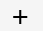 und dann 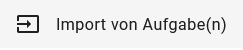. Es öffnet sich ein Fenster wo man das neue Archiv auswählt. Die reparierte Aufgabe sollte jetzt im Studio erscheinen, ggf. muss man sie noch einer Gruppe zuweisen. Der Fehler sollte nun behoben sein. Sollten weitere IDs doppelt vergeben sein kann man den Prozess wiederholen.
Sonstiges
Wo sehe ich, in welchem Abschnitt ich mich gerade befinde?
Ganz oben rechts wird Ihnen der Arbeitsbereich angezeigt.
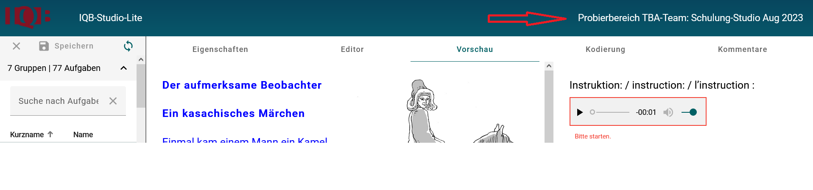
Wie stehe ich, ob ich mich in einem Arbeitsbereich mit Standardmodus oder erweitertem Modus befinde?
Oben rechts ist auszuwählen, in welchem Modus man sich befindet. Wenn ein Haken bei „Erweiterter Modus“ gesetzt ist, befindet man sich in diesem. Wenn kein Haken gesetzt ist oder das Menü nicht zu sehen ist, befindet man sich im Standardmodus.
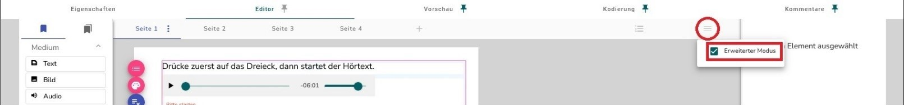
Ich möchte einen Abschnitt komplett löschen, finde aber bei den pinken Knöpfen das „X“ nicht. Wie gehe ich vor?
Es kann sein, dass es nur einen Abschnitt in Ihrer Aufgabe gibt. Einen alleinigen Abschnitt können Sie nicht löschen, Sie können einfach einen neuen, leeren Abschnitt erstellen und den alten löschen.
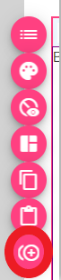
In seltenen Fällen kommt es vor, dass das „X“ nicht anklickbar ist. Dann können Sie versuchen, den Abschnitt zu verschieben (mithilfe des Pfeil-Knopfes in der pinken Leiste) oder einen leeren Abschnitt zu kopieren (erweiterter Modus) und den zu löschenden Abschnitt damit zu überschreiben.
Mein Bild, das ich einfügen möchte, hat die falsche Größe. Wie kann ich es anpassen, sodass es ins IQB-Studio passt?
Wenn Ihr Bild die falsche Größe hat, gibt es mehrere Möglichkeiten:
- Sie können das entsprechende Bild unkompliziert mit dem pixelbasierten Grafikprogramm GIMP skalieren, also in der Größe verändern. Eine detaillierte Anleitung inkl. Downloadlink (kostenfrei) finden Sie hier: Bilder skalieren
- Sie können die Größe auch mithilfe der Spalteneinstellungen im IQB-Studio begrenzen (erweiterter Modus). Hier ein simples Beispiel:
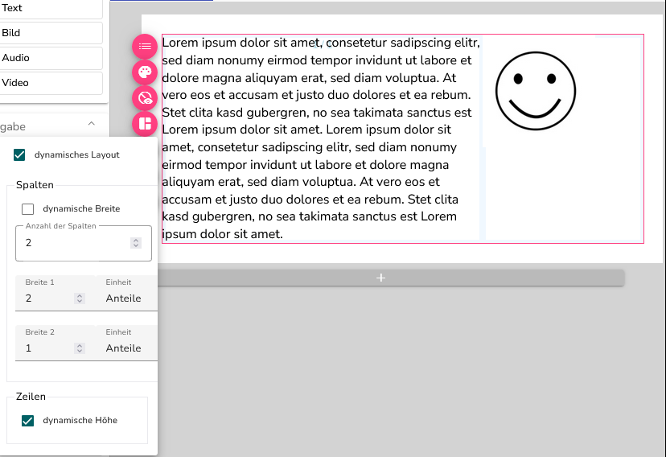
Sie wählen den pinken Knopf „Layout“  in der Abschnittsleiste aus und entfernen bei „dynamische Breite“ das Häkchen, um die Anzahl der Spalten und ihre Breite einzustellen. Entweder anteilsweise (bevorzugt) oder mit festen Bildpunkten. So lassen sich Bilder effektiv verkleinern und sie bleiben trotzdem dynamisch. Sie können zudem mit der Spalten- und Zeilenspanne arbeiten (Klick auf das Element, rechts Position 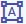 wählen), um Bilder oder andere Elemente noch genauer zu positionieren.
in der Abschnittsleiste aus und entfernen bei „dynamische Breite“ das Häkchen, um die Anzahl der Spalten und ihre Breite einzustellen. Entweder anteilsweise (bevorzugt) oder mit festen Bildpunkten. So lassen sich Bilder effektiv verkleinern und sie bleiben trotzdem dynamisch. Sie können zudem mit der Spalten- und Zeilenspanne arbeiten (Klick auf das Element, rechts Position 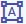 wählen), um Bilder oder andere Elemente noch genauer zu positionieren.
Wie kann ich eine oder beide der linken Leisten (Übersicht Gruppen und Aufgaben & Elementenliste) kleiner stellen, um mehr Platz zu haben (z. B. für die Arbeit im Editor)?
Sie können die Aufgabenliste verkleinern, indem Sie die Linie zwischen Aufgabenliste und Elementliste nach links ziehen (im Bild rot umrandet).
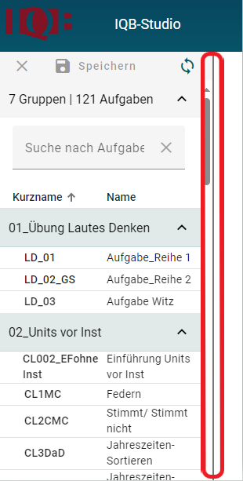
Warum muss ich auf die neuste (Aspect-)Version umstellen?
Die neuste Studioversion ist teilweise eine Mindestanforderung für bestimmte Features, wie dem vertikalen Blättermodus (ab 2.3 verfügbar) oder den Assistenten (ab 2.5). Genaue Details über die Änderungen sind jeweils in den Patchnotes zu lesen.
Woher weiß ich, wann ich auf welche Version umstellen muss?
In manchen Arbeitsbereichen ist beim Neuanlegen einer Aufgabe eine Version voreingestellt - dort sollte am besten nichts geändert werden. Wenn eine Version geändert werden soll (etwa um ein neues Feature zu nutzen), wird die entsprechende Fachkoordination einen Hinweis, was nur in einer neueren Version verfügbar ist.
Wie kann ich auf die neuste Version umstellen?
Beim Klick auf die zu updatende Aufgabe auf den Reiter „Eigenschaften“ klicken. Dort findet sich unter dem Bereich „Beschreibung/Notizen“ der Abschnitt „Verona-Module“. Auf diesen klicken Sie nun. Jetzt werden die aktuellen Versionen des Editors, der Vorschau (Player) und der Kodierung (Schemer) angezeigt:
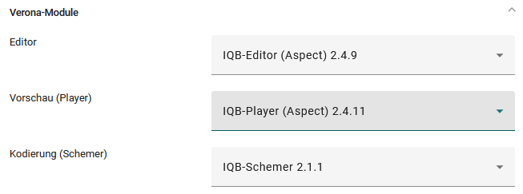
Mit einem Klick auf die jeweilige Version taucht ein Drop-down Menü auf, in dem die gewünschte Version ausgewählt werden kann. Wenn Sie nicht wissen welche das ist, kann Ihnen Ihre Fachkoordination weiterhelfen. Wenn Sie die korrekte Version für alle Teile der Aufgabe eingestellt haben, gehen Sie auf den Editor (hier kann sich nun die Nutzeroberfläche leicht verändern, wenn Sie eine ganze Basisversion updaten) und legen einen neuen, leeren, Abschnitt an. Diesen löschen Sie direkt wieder, er dient dazu, dass die Aufgabenteile ebenfalls aktualisiert werden. Wenn Sie diese Schritte vorgenommen haben speichern Sie oben links im Studio die Aufgabe, welche nun die neue Version hat. im Normalfall vertragen sich Versionen mit den Vorversionen (Eine Aufgabe aus Version 2.2 sollte problemlos auf Version 2.5 umgestellt werden können - aber nicht anders herum) Dies gilt nur für alle Versionen der selben Mainroutine (erste Zahl ist gleich) - bei Aufgaben mit Version 1._ muss einiges beachtet werden.
Kann ich bei Aufgaben in einem Arbeitsbereich auch mehrere Versionen einstellen?
Theoretisch ist es kein Problem Aufgaben mit mehreren Playerversionen gleichzeitig zu verwenden, es ergibt sich jedoch ein technischer Nachteil, da mehr Datenlast durch mehrere Player vorhanden ist (ist nicht zu empfehlen). Falls sich für das Arbeiten mit mehreren Versionen entschieden wird, ist darauf zu achten, dass dieselbe Mainversion (zB 2.4.2. und 2.4.9) verwendet wird, da sich sonst visuell starke Unterschiede ergeben.
Elementspezifische Fragen
Eingabefelder/Eingabebereiche
Wie füge ich ein neues Eingabefeld beim Lückentext ein?
Öffnen Sie das Bearbeitungsfenster des Lückentextelements, z.B. durch Doppelklick auf das Lückentextelement im Editor, unter dem Reiter „Verbund“. Klicken Sie dann auf „Eingabefeld“ um ein neues Eingabefeld einzufügen:
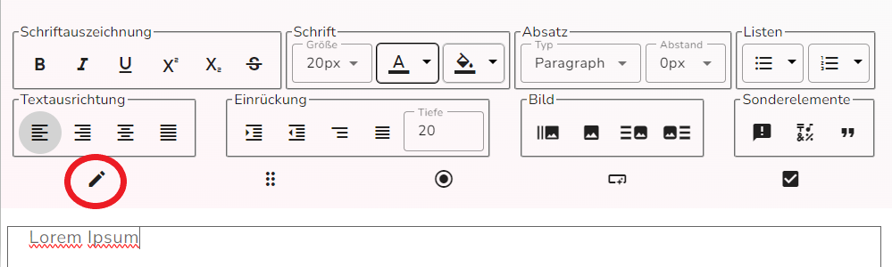
Wie kann ich ein Eingabefeld/Antwortfeld schreibgeschützt vorbelegen?
Dafür müssen Sie auf das Eingabefeld klicken und dann rechts bei „schreibgeschützt“ das Häkchen setzen und bei Bedarf das Feld „Vorbelegung“ ausfüllen:
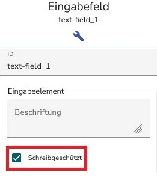
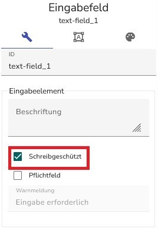
Textelement
Wie kann ich innerhalb eines Textelements einen Absatz setzen?
Dafür können Sie die Enter-Taste nutzen. Im Texteditor (Doppelklick auf den Text) können Sie außerdem einen Absatzabstand einfügen (0px, 10 px oder 20 px).
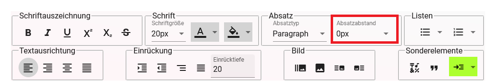
Kann ich Anpassungen in den Optionen in Bezug auf die Schriftart/Schriftstil usw. vornehmen?
Die Schriftart oder den Schriftstil können Sie nicht anpassen. Sie können aber begrenzte Einstellungen an der Schrift (z. B. Größe, Ausrichtung oder Farbe, siehe Grafik) vornehmen, sofern es sich um das Textelement handelt. Klicken Sie dazu mit einem Doppelklick auf den Text vom Textelement der auf den Stift rechts in den Einstellungen:
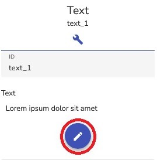
Dan öffnet sich der Editor des Textelements (dies funktioniert im Standard- sowie erweiterten Modus):
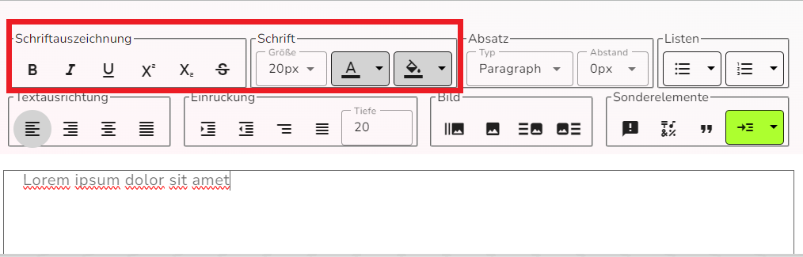
Es gibt darüber hinaus im erweiterten Modus in Textelementen sowie auch in anderen Elementen die Möglichkeit weitere Einstellungen an der Schrift vor zu nehmen. Klicken Sie dazu das entsprechende Element an, anschließend wählen Sie rechts den Kopf mit dem Farbpaletten-Symbol (erweiterter Modus) aus:
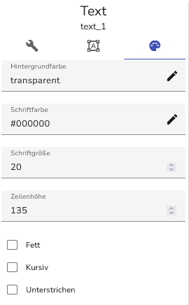
Drag and Drop
Wozu gibt es die ungefähre Länge der Elemente bei Drag and Drop Aufgaben und wie kann ich im Nachhinein die ungefähre Länge der Elemente bearbeiten?
Die ungefähre Länge der Elemente bestimmt die Größe der Elemente, damit neben den Antworten nicht zu viel Freiraum ist.
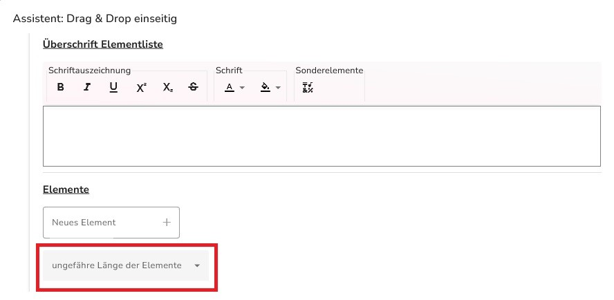
Die ungefähre Länge der Elemente, die für ein DaD Item angegeben werden, kann nicht im Nachhinein noch angepasst werden. Um einen ungefähren Überblick über die benötigte Länge der Elemente zu erlangen, kann sich an folgenden Beispielen orientiert werden:
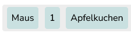
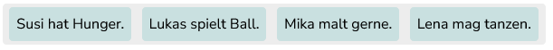
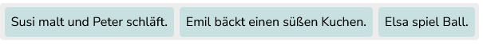
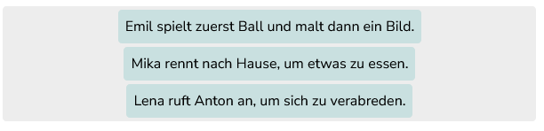
Sonstiges
Ich habe ein Element gelöscht, nun ist eine leere Zeile entstanden. – Wie bekomme ich die leere Zeile weg?
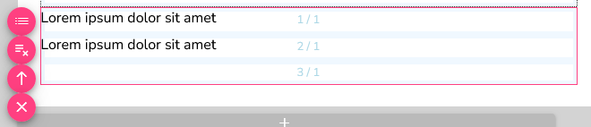
Befindet sich die leere Zeile am Ende des Abschnitts, können Sie (nach dem Speichern, falls es Ihren Vorstellungen entspricht) auf eine andere Aufgabe klicken und dann wieder zum Editor der zu bearbeitenden Aufgabe gehen. Die untere leere Zeile sollte nun verschwunden sein.
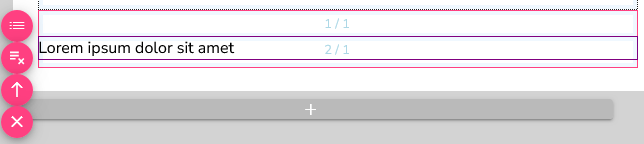
Befindet sich die leere Zeile am Anfang oder mitten im Abschnitt, positionieren Sie alle anderen Elemente in die oberen Zeilen. Dazu klicken Sie das entsprechende Element an, klicken rechts auf den -Knopf und nehmen Zeilen- und ggf. auch Spalteneinstellungen vor. Diesen Vorgang durchlaufen Sie mit allen Elementen. Es bleibt unten eine leere Zeile. Einen Abschnitt über diesem können Sie nachlesen, wie Sie die leere Zeile entfernen können.

Dies funktioniert allerdings nur im erweiterten Modus. Wenn Sie für diesen keine Berechtigung haben, ignorieren Sie die leere Zeile.